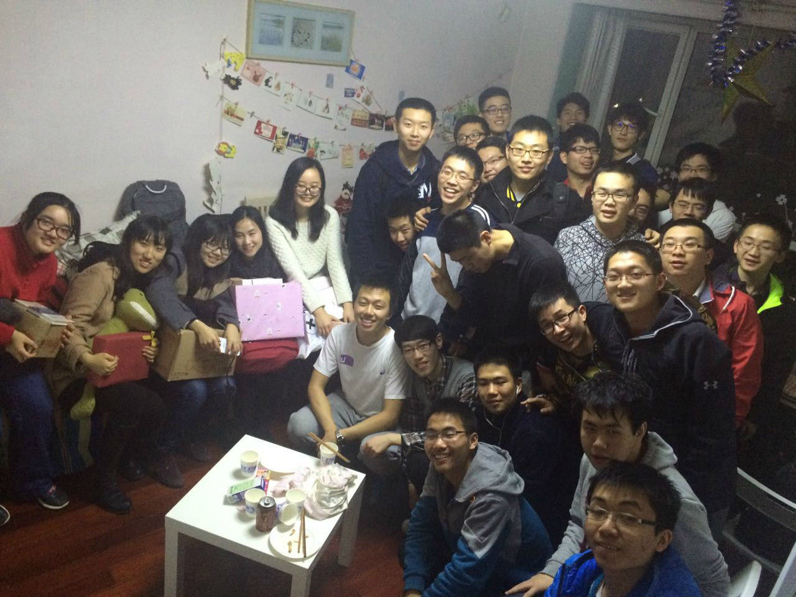
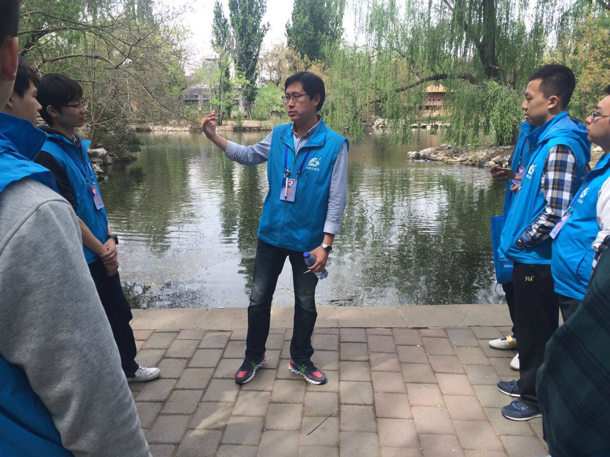
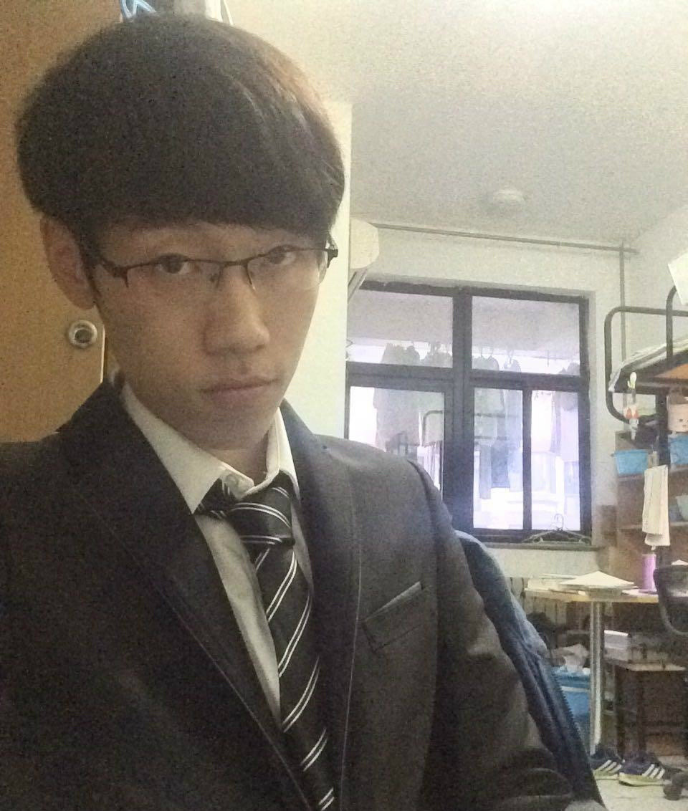
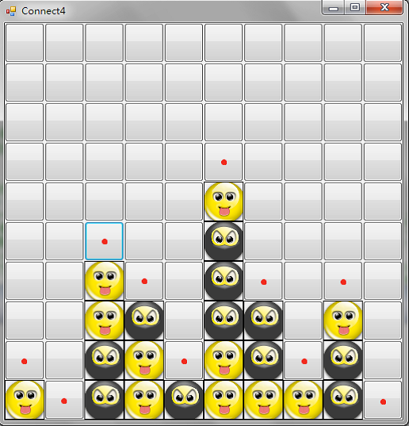
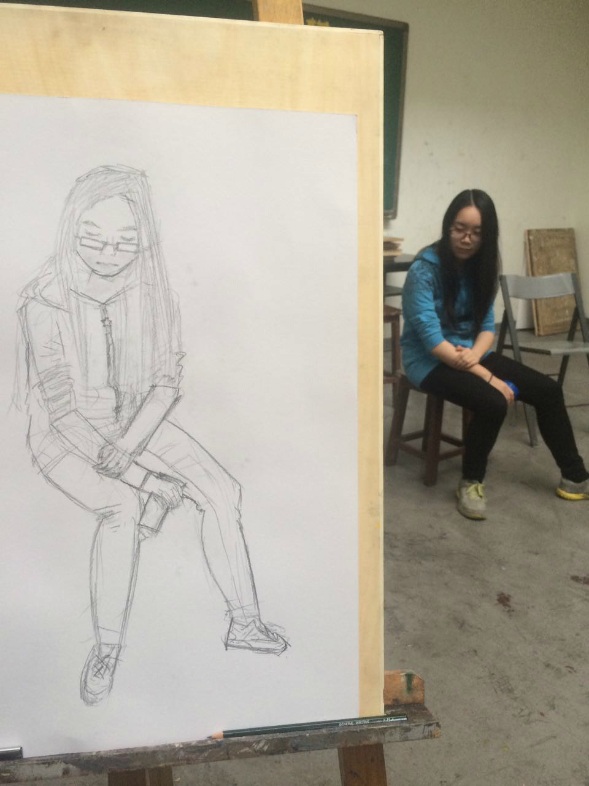
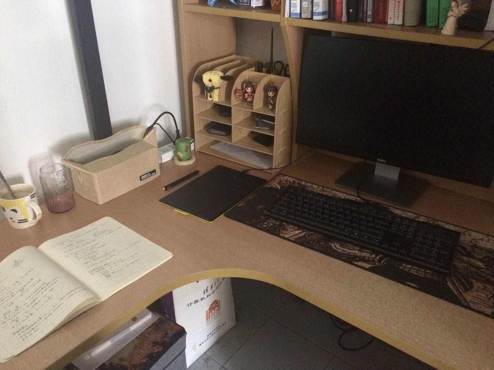

一步一个脚印——记大二下
大二下这一学期的开始就是一个意外，拿着不是当天的火车票坐上了前往学校的火车，中途有人抢我座位才发现…然而最终还是站着到了北京hhh
回想这一学期，给我的感觉过得特别快，并且貌似也没有做出很突出的成绩。但细细回想的话，还是有一些闪光点的，就像标题中所说，一步一个脚印，我留下了属于自己的足迹，同时也有还未到达的远方。总之，这学期是平凡也可圈可点的一学期，学习和社工上都有一定的成绩，科研也迈出了微小的一步。同时也有很多还想要做的事情。
读书——“重新找到其中的乐趣”
要说读书习惯最好的时候，是大一下，那时每天早上能早早起床读书，感觉非常好。可后来就越起越晚，越睡越晚。到大二上基本就不知道读书是什么东西了。
这学期虽然也没能早起，但还是利用闲暇时间读了一些的，大多是前半学期：
- 《龙族四》：先说这个好像显得不务正业诶…因为是上学期期末买的，一直没看，所以这学期第一个看的这个，就不做评论了，这种书看起来还是带劲；
- 《天才在左 疯子在右》：之所以会看这本书，是因为选的一门社工课的作业中有一个是要求读书的，给的书单中有这本，正好室友也有这本书，就拿来看了。都是一些精神病人的小故事，拿来当睡前故事看看还行，也不能当真，虽然有一些还是比较感人或者引人深思的；
- 《白夜行》：突然想到好多人推荐就从图书馆借了这本，真心不亏！看完之后心中的震撼真的无以言表。接触的第一部推理小说是狄克森·卡尔的《三口棺材》，然而并没有让我产生很大的兴趣。东野奎吾的这部《白夜行》却委实让我感受到推理小说的魅力，那种伏笔和铺垫、人物性格的塑造、情节的合理性，以及最终就像将一颗颗珠子串起来一样串联起所有的线索，所有的事实都得以合理的解释，心中总会有莫大的震撼和莫名的爽快。
- 《飘》：这部好像贯穿了三个学期了，一直却也没有把它看完。这学期看了不少，上已经看完，下也差不多了。说实话可能这种名著确实没有其他书对我的吸引力大。
- 《嫌疑人x的献身》：暑假回来买了东野奎吾的其他书来看。这本的构思也是十分巧妙，数学天才石神的塑造也非常完美。感到有趣的是其中石神和汤川两位天才讨论的诸如四色问题、P和NP问题都是大学以来专业上学的，看着有种莫名的亲切。
- 《解忧杂货店》：东野奎吾的另一部作品。不同于其他，这部写得很温柔，刚开始看甚至感受不出他的那种风格。但等合上书本，不禁感叹还是那个东野奎吾，将所有事实串联到一起的能力还是那么强，唯一不同的是，这本书里面可能更多的是一份感恩和感动。
其他就没有什么了，目前在看《恶意》，是买的东野奎吾书的最后一本，还不知道之后要入坑什么，如果有好书求推荐。
社工——“算是有了点成绩”
- 团支书
根据大一的经验，下半学期一般都会在社工上有所懈怠，虽然心中有在刻意避免，但还是难免有这样的情绪。好在还有靠谱的班长和其他班委，还算成功的举办了女生节蛋糕DIY、素拓、团日等活动，最终的甲团评比也圆满收场，并且得到了年级第一名，还算是挺大的一个慰藉的。

但其实这学期举办活动的时候有些就随意了点。像素拓，当时班委会讨论想去动物园玩一玩，本想水一水过了，但写材料写出去玩肯定不行，所以口胡说是去做志愿者的。之后抱着试一试的想法查了查北京动物园的志愿中心情况，没想到真的有专门的机构，打了几次电话咨询了一下发现还挺靠谱，也许真的可以把这次素拓变成一次志愿活动。结果也确实这样办了，当天下午我们都穿上了志愿者的衣服，一个非常有趣的工作人员叔叔带我们逛了好长时间，真心了解到不少动物知识。最后我们也帮忙做了一下游客调查反馈，就是我们负责的志愿活动的内容。总之，这次素拓感觉还是蛮有趣的，虽然班里最后去的人其实不多，但自我感觉还是很好玩的。

团日倒是比较曲折的一次活动。和辅导员商量是要办关于创业的交流沙龙，会请一些学长来交流。本来辅导员都说联系嘉宾交给他，我这边其实一直都没怎么上心，想着到时候和联系的嘉宾一对接，设计一下当天的流程就好了。结果却不那么如人意，本来准备五一假期之后举办团日，串寝都这样说了，但五一放假前一天问乔导嘉宾的事，却只收到了一个微信名片和一句话“联系他然后让他帮忙联系嘉宾吧”……我一脸懵逼，诶，不是说嘉宾都联系好了吗，这怎么还要从头联系，要完…没办法，硬着头皮先加这个联系人好友，结果因为在五一假期，加上他用了两天，等他回复又等了两天。这下五一后办团日是不可能的了，其他的好多事宜还没准备，假期期间班委好多也不在，没法干活。最终团日时间推迟一周，在这一周中终于通过联系人松导联系上了三位算是比较重量级的嘉宾。之后的事情倒还算顺风顺水，一点一点准备，上去主持也没出什么差错，现场气氛也不错，是一次挺成功的团日。
团日准备的时候其实有点恼火乔导的，让我非常措手不及。但后来乔导告诉我的一段话让我的这种感觉烟消云散，反倒有些感动。那个联系人是乔导的辅导员松导，本来乔导是给他说要帮我们班联系嘉宾的，但松导却回道：“让他们班的小朋友自己来联系我，锻炼锻炼他们，我锻炼你已经锻炼的够多了。”
最终团日也获得好评，在前支书的努力下评比中获得了第一名。
甲团评比是这学期非常重要的事情，但每次说到这个就会想起大一被成堆的甲团材料支配的恐惧。但这学期感觉还算好，任务分配下去每个班委写的也不算很多。作为团支书，我负责比较重要的团支部工作报告部分，确实费了很大的心，从构思行文结构、所写内容到设计小标题、目录、选照片再到排版等等。最终算是拿出了一个漂亮的工作报告，至少是让我还满意的，一定程度上展现出了计45班的风采。
除了材料，甲团评比中还有一项就是游园会。辅导员会在游园会上听各班支书答辩，各班则会准备一些小游戏来吸引观众，观众投票也占一定的分数。我们刚开始准备的游戏是桌上足球，买了一个小号的，结果没想到不仅当时有好多班都买了桌上足球，4班还买了一个大号标准的，这让我们这些小号的顿时黯然失色……最终也就被弃在一边了，辅助的桌游、象棋什么的倒成了我们的主打，连学校团委的观察员都在我们这玩得不亦乐乎，到收摊了还不想走。
游园会上的答辩倒是没特别准备，前一天对着展板想了想说什么就直接上了，效果感觉不是很满意。感觉自己还是比较适合在安静的教室对着观众阐述，这种喧闹环境里声音出不来，反而因为吵闹还容易打断思路，我还没有提前备稿。总之感觉表现平平，不算差但也不是很满意。
这个甲团的荣誉也算给我一年的团支书工作画上了一个圆满的句号。公布甲团结果的当天正好是我的生日，可以说是最好的生日礼物了。那天的票圈也是收获赞最疯狂的一次，晚上看个电影打开手机数百动态，着实感动。团支书这个工作确实累，但要问我后悔不后悔，我只会回答不后悔。且不说举办这些活动无一不锻炼着我，和班里这样一群有趣的人共事就足以成为不后悔的理由。还记得甲团游园会之后班委聚餐，在南京大排档吃得那么开心，邵哥说想吃蛋糕，我因为对中关村附近比较熟悉还做了一回老司机，带着大家找蛋糕店。之前在那一片都是跟妹子走的，说起来那时还正在跟她闹别扭，真是讽刺，但想了想回去的时候还是带了杯子蛋糕给她。
- 学生会
在我们计算机系学生会运营部下学期倒是没什么事，除了日常的微信平台的维护，拿得出来的可能只有主席换届的学代会了吧，然而我还因为周末有美双课没有去参加，只参与了一些前期准备工作。下学期学生会好像确实比较闲。
值得一提的是下学期我将出任运营部副主席了，要带五字班的小朋友还是有点慌的。现在已经完成了招新工作，看起来新的部员都还是很靠谱的嘛。我自己的话对于微信平台也有些改动的想法，希望下一学年能把这个副主席做好吧，可能之后这会是我最主要的社工了。
- 星火组
虽然在这个组织也和大家吃吃喝喝有说有笑的，但感觉还是没有完全融入进去，可能不太重视又懒得揽锅吧，并没有做很多的事。学期中还有一次跟着欣怡女神做一个网页，DDL那时正好是我们游园会结束那天，结果我那部分还没搞好，后来是其他人帮着补完的，感觉挺对不起人家的。下学期也已经说了退出星火组了，加入的这一年还是玩得很开心的，就是有些惭愧了。
科研——“微小的一步”
- SRT
之前在科研上一直没有过尝试，这学期决定去试一试。所以学期初就打听了很多关于SRT和实验室报名的事情。最终报名了一个分布式计算的SRT，负责的是一个萌萌的博士生学姐，我们乔导还是她带的小学弟，和她一个实验室。真的是萌到讨论着讨论着会突然看亮起的iwatch，说：“啊，我的小天才手表提醒我要站起来活动活动了~”。桌上的各种手办也暴露了她的属性…
SRT主要在Linux下实现Paxos算法并作出一些改进。然而我之前连Linux都没有接触过，于是刚开始基本都是熟悉Linux的任务。和学姐每周会见一次面，一点一点熟悉网络通信的协议和库。慢慢的也熟悉起来了，写了一些测试的代码。
刚开始还一直保持着每周见面讨论，当时乔导还说她比较贪玩，让我多主动领任务。我还说不会啊，每周她都会找我聊。然而没两个月，她就因为其他的DDL把这个搁置了…后来也主动找过她问这个什么时候再开始，不过一直到学期结束也没有再做过什么。但也不着急，这个SRT时间很长，她也回应说忙完最近的事情下学期再继续做，只是当时熟悉的那些知识现在也忘得差不多了。
- 实验室
实验室方面倒并不顺利，申请了我们班主任负责的实验室，想去班主任手下做点事情。但找他聊却被婉拒了，理由总结有二：一个是大二上学期成绩有下滑态势，从之前的20%多降到了40%边缘。作为班主任希望我将成绩提一提，不要把时间费到实验室上；二是他认为过早进入实验室只会负责数据处理等搬砖的工作，并不会有很大的提升。
总之，这次进入实验室的尝试失败了，我也确实认可班主任老师的说法。然而我却第一次由衷的感受到GPA的重要性，内心受到了很大的冲击。当时就下定决心一定要在这学期把更多的时间投入到学习上，拯救一下我的GPA，必须要做出些什么改变现在的状态。
学习——“总算有所改观”
由于实验室申请失败的刺激，这学期自认在学习上多用了一些心，班主任的话着实让我思考了很多。最后的结果也算没白努力，平均GPA达到了91.5，比上学期不知道高到哪里去了。没枉费我基本每场考试前都去了答疑，有趣的是自动机答疑，我去的时候只有老师一个人在查考试卷子，搞得我非常尴尬…然而并不能看到试卷上的题。
- 演讲与口才实用技巧 [89]
老师挺厉害的，是中国演讲协会的，好像是会长吧。上课很有激情，然而像极了传销，动不动就“跟我一起念：‘演讲改变命运blabla’”。并不喜欢这种做作的演讲，所以演讲技巧上没学到多少，唯一收获的可能就是两次正式的演讲机会，还要穿正装。一次自我介绍，一次结课演讲，还有课上回答问题占一部分分。从成绩来看排中上，看来这种做作的演讲还做得不是很出色，还有待提高，虽然并不喜欢这种演讲方式。

- 学生社会工作概论（提高班）[97]
这个课是被我们部副主席安利上的，没想到能拿这么高分，初级班还没上90。上这个课其实很尴尬，班上其他同学都是部长及以上，只有我特殊，像我们系这样的大二只可能是干事，所以课上点到我回答类似“作为部长第一次和部员见面注意些什么”这种问题就很尴尬…我自己明明就是部员啊…
个人作业我选的是读书，好像选这个的很少，看的就是上面提到的那本。要写读书笔记并且作一篇图文并茂还有配乐的推送。自认这个作业很认真的做了，助教姐姐评价也不错；
团队作业是分组调查校园内生权问题的反馈渠道和存在问题。我因为在微信群中掷骰子点数最大成功当选我们组的组长…带领这一群部长主席做这个课题还是有点慌的。为了当好这个组长尽了很大努力，从分配任务开始，到后续的推进、发问卷、采访校会副主席、整合数据。然而结果自己不是那么满意，当时正是快期末和甲团的时候，大家都很忙，最终答辩前大家只讨论过两次，答辩也没有过一遍就直接上了，感觉还是有点遗憾的，效果不如想象中好。但认识各个系的骨干同学也许才是这个课的最大收获。
- 概率论与数理统计 [89]
十分有趣的一门课，本来选的是梁恒的，结果老师上楼梯摔到鼻子了，于是临时换成了“四大名捕”之一的唐宏岩hhhh。但这个老师本身我是超级喜欢的，上课的风格什么的都很合我的胃口，因此这门课没有翘过一次，并且每堂课都认真做笔记，最后期末的时候这本笔记还拯救了不少人呢。
唐宏岩讲课思路非常清晰，还不时有有趣而有意义的段子，但总有种笑里藏刀的感觉。期末考试占70，考了八道大题，都是作业题的变种，区分度却很高，一不留神就有陷阱。结果前面做的太稳了，后面时间不够了，最后一题胡写了几行就交了。最后发现最后一题当时脑子一懵方法都用错了，然而考试当天还和室友讨论过那个方法…欸，这样等于丢了一大题，从成绩看前面答得还算不错。其他分数除了作业还有一个小论文，关于概率论什么都行，当时正好人智写朴素贝叶斯算法，就写了关于这个的一点思考。
总之这个课我还是相当喜欢的，虽然期末有点遗憾吧。
- 物理实验B(2) [89]
我的实验课有毒…都是89分，已经三次了。做一些看不懂的实验，写报告也还算认真。自此也终于告别物理的一切了！
- 毛泽东思想和中国特色理论体系概论 [92]
最后一门的政治课真是麻烦的要死，有MOOC、有线下讨论、有寒假调研、有课堂小测、有课堂展示、还有期末考试。前八周MOOC是最后从某个群里拿到的答案抄的，后八周有小测所以没翘过课。展示和读书报告是二选一的，当时选了展示，和室友组队谈了谈中国的政党制度，觉得效果还不错。期末考试随堂写一篇小论文，开卷，主题二选一，我选的是“改革和市场”什么的，高考作文时的技巧都用上了，什么小标题、排比、总分总结构，虽然扯的都是我不怎么懂的东西，但结构好看可能起到了一些作用，最后成绩还是过得去的，比马原不知道高到哪里去了。重要的是终于告别政治课了！
- 学术英语听说(3)——讨论 [88]
上课主要听老师侃，还有组内的讨论，作业是一本朗文听说3，需要听听力做笔记，有两次quiz是根据自己的笔记答的。上这个课听力提高挺多的，第一次感觉听听力基本都能听懂了，可能是之前太渣了。但上课只和老师互动过几次，很多时候还是不太敢说，说得多的话总会找不到词。
最终还有个分组展示，主题不限，我们组是唯一一个既有男生也有女生的，女生是一个韩国的留学生，所以我们的主题莫名定成了“爱情中的心理学”，我又莫名变成了男主…不过我们因为有留学生有次讨论还得以去了一次留学生公寓的讨论室，那里的环境是好啊。
最后展示效果还挺棒的，组内另外两个都是大腿。喜欢这种英语课就是因为每节课都能遇上一些很棒的组员，认识不同的人，还是挺开心的。
- 初等数论 [96]
老师四川方言浓厚，上课就是方言听力考试，以至于后来就没怎么去上课了，教得也一般，基本靠自学。作业也很奇葩，每章留的作业可以写完也可以只写一题，但不管写多少只要错了就扣分，也就是说写得多反而更容易得低分…然而还是每次都写完了。有期中期末考试，都是原题证明书上定理，期中扣分不严，期末扣过程分特别细。还好复习的时候也比较细致，没有别扣掉很多。但这门课真正学到的东西感觉不多，可能现在只是弄懂了同余什么的。
- 人工智能导论 [96]
教一些人工智能的算法，A*、蒙特卡罗、机器学习还有后面的谓词演算、神经网络什么的。上了几次课之后也就没去上过课了，平时编程作业实现一些算法，还比较简单。大作业写四子棋AI，比较有趣，还有图形界面，最后评分像打天梯，老师有100个水平层次的AI，按打赢的个数给分。最后用的是蒙特卡罗加一些细小的优化，比如快速log什么的，结果输了五盘，都是后手输的，不是很强，然而后来也不知道怎么改了…好歹不是人工智障了。

期末考试基本都是手算算法，唯一一个考完觉得还不错的考试，考的点虽然偏但都复习到了，最终成绩也比较满意。
- 数字逻辑电路 [94]
学一些门电路、逻辑运算、分析电路、设计电路的知识，最后有一个期末考试。平时学得懵懵懂懂的，到期末考试才把知识点理清。平时作业其实有好多都不会做，画复杂的电路图也是挺烦的。期末考试倒是挺简单，自我感觉还行，时间也刚好够做完，可能有些题会有一些纰漏。这门课还是学到了一些东西的，也为下学期造计算机打下了一些基础，虽然只学了理论，比数设的同学还差远了。
- 数字逻辑实验 [97]
做一些数电课上讲得知识对应的实验，有一个很有趣的实验箱，提着它去上课像恐怖分子一样，随时从箱子里掏出一把组装枪的感觉。好笑的是有一次穿连帽衫戴着帽子，手上提着箱子从东主楼出来，和一个女生擦肩而过，之后听见那个女生嘀咕了句：“喔，好酷”。当时笑喷了。
用这个拉风的实验箱做的实验也很有趣，分两部分，一部分使用CPLD编程的，用可编程芯片实现各种功能；另一部分是门电路，利用门电路芯片实现功能，这种连线往往要连得相当复杂。最后一次实验要现场接线，记得当时设计的电路并不是很好，要接99根线，最快接完的是室友黄大大，那时我还没连完一半…然而不知道为什么最后得分这么高，受宠若惊，还是排名第一，不太懂助教和老师怎么想的。

- 形式语言与自动机 [91]
刚开始一直不知道这个那个自动机是什么玩意，老师讲得也相当催眠，属于只有写作业和考试前才知道学的是什么的课。这是编译原理的先修课，还是要好好学的，但编译原理也是这个老师教，可怕…学了各种语言和各种自动机，考试是题量很大的小题，都是些简答、设计和证明，还有一些选择判断。最后期末考试时间又不够了，最后一道证明题没写完，再加上前面的一些疏忽，这样的成绩差不多。希望到下学期还能记得这些知识。
- 体育(4) [77]
这学期选的是游泳，那树森老师真的是非常赞，和他聊天特别愉快。在这个夏天每星期去游泳馆游一次泳感觉非常好。学的是蛙泳，虽然之前也会一点游泳，但第一次尝试游50米就没游下来，浑身酸痛，体力撑不住。经过一个学期的训练，最后游100米已经非常轻松了，已经在追求满分。最后考核100米蛙泳游了2分15，离满分还差15秒，但对于我来说已经挺满足了。
其他的项目还有一直让我很头疼的引体向上，不过这学期真心练了不少，也突破了不少，最后成绩是上一次的4倍呢，虽然上一次考试只有两个…但对于我来说这学期从零开始练，到最后的八个进步还是不小的。之后体育就不算分了，也不知道能不能坚持下去。
- （美双）游戏心理与策划 [91]
游戏行业的老司机给我们传授一些人生的经验，分析的很多玩家的心理和逸闻都很有趣。作业是组队设计一款游戏，只要出策划就行，关键字是从百度热词上随机找的，所以都很奇葩，比如我们组的是“高考、跑男”，有些组还有“三岁监禁”、“色诱”这种。
我们组有些闹不愉快，因为有一位同学特别固执而且和我们的脑回路都不太一样，讨论的时间都浪费到和他争执上了。没办法还是硬着头皮去想，其中我提出的一个核心玩法理念被采纳了，就是玩家必须要先合作再最后竞争出唯一的胜者的思路，就像高考一样，平时互相学习，最后胜者却总是少数。然而之后就没做出什么贡献了，最后设计出的游戏大概类似“以撒的结合”那种，融合高考跑男的元素设计道具和boss。
- （美双）游戏影音基础 [87]
先学AE再学AU，AE上课基本没学到什么，最后的作业自学肝一天做出了一个lowlow的火柴人开场动画。AU感觉更没学到什么，讲了很多理论，但没有作业就没有去自学，导致现在还不太会用，只能像用cooledit一样用一些基本的操作。印象最深的也许就是参观录音棚了，还在录音棚里体验了念说明书的感觉2333因为不太敢唱歌。

- （美双）游戏美术基础 [84]
这个课是最好玩的，因为这个课开始接触素描，本来以为刚开始花一些苹果、几何体什么的，结果上来就画人，刚开始大家的画都惨不忍睹。但随着课程的进行，我们一个个灵魂画手都进化了，从此每周朋友圈晒画也成了一大乐趣。有人物速写、肖像、人物解剖、石膏、场景创作，虽然到最后画出来的画也不是那么有艺术水准，但能看到自己的进步还是很开心的。
最后两节课学习了数位板的使用，为此还买了数位板，用它代替鼠标顿时感觉逼格提高了不少。但真正用它画画倒没画多少，用它在电脑上进行α-β剪枝倒是非常方便hhhh


其他
这学期开始特别败家，花了好多钱。山地车两度丢失终于还是没找回来，被迫换了自行车；眼镜腿莫名断掉了，被迫换了眼镜框；鼠标莫名坏掉了，被迫换了个鼠标；脑子一热买了个电子琴，本来还想报钢琴班的，结果去试听了一节感觉讲得太简单了…于是就回来自己练，一学期断断续续还是学了几首曲子的，有从喜欢的动漫中选的曲子，比如《未闻花名》的edSecret Base；也有经典的，比如石进的夜的钢琴曲五；还有流行的演奏曲，比如风居住的街道，以前听妹妹弹过，感觉不错。没事能在寝室弹弹琴还是非常心情舒畅的。练琴的时间大多数选在晚饭左右，希望没有吵到周围寝室的同学。
放假回家又刚学会Deemo中的一首the Truth that You Leave，比较难，但学会后成就感爆棚。不知道下学期还有没有时间学习新的曲子了。
另外一个很重要的花钱地方就是更新了寝室的装备，买了戴尔的U2414h显示器，以及cherry的机械键盘（茶轴）。从此笔记本电脑就成为主机一样的存在了，除了周末美双带电脑基本没动过它，显示器键盘什么的都用外设。不得不说，大屏幕加机械键盘，还有新的大号键盘鼠标垫用起来就是爽，寝室的舒适程度直线上升，直接导致这学期根本不想去图书馆，还是在寝室比较爽。

娱乐上用大屏幕通了古墓丽影9，后来趁降价入手了古墓丽影10，用了一个月通关。中间玩了育碧的清新之作光之子，有时和我哥联机打打传送门2。后来就没怎么玩游戏了，偶尔玩一玩刺客信条4和无主之地2。学期末入了守望先锋坑，中毒颇深，然而家里真是一个很好的戒毒场所，网络太渣经常掉线，后来干脆就不玩了。却又正好赶上steam夏日促销，剁手剁得很爽，买了不少小游戏，但有很多玩了一会就放下了，真正玩的多的是高考恋爱一百天、人力资源机器和以撒的结合：重生，解锁了人生第一个gal的成就hhh
展望
-
马上要前往重庆参加校团委组织的实践，跟着三个靠谱学姐调研农村电商方向，希望可以起到自己的作用，感受一下学校组织的这种高逼格的实践是什么样的。
-
下学期好好攻克本系的那几门硬课，尽量保持现在的学习状态和成绩。正好下学期妹子也要去瑞士交换了，也没有选其他的任选课，选上了自己喜欢的限选课，希望能把仅有的这些专业课好好做到极致。
-
做好自己运营部副主席这个职务，做好本职工作的同时给微信平台带来一些改变，同时让五字班小朋友有一些成长。
-
大三上结束开始找实验室，是时候去体验体验了，那时应该会有一定的能力基础。
-
准备托福，大三下考托，如果可能的话申请大三暑假的外国暑校。虽然说着对出国不感兴趣，但还是想去看看的。
-
熟悉这个SRT方面的知识，让这个SRT圆满结束。
-
寒假一定要去考驾照三考！！不然要过期了！！
-
尽量坚持每天的体育锻炼和寒假调回来的生物钟。
结语
越写越长，也越写越流水账了…也不知道有没有人能看完。但确实是把想到的、想说的都记下来了，希望能保持现在的劲头，无需一次迈出多大的脚步，只要这样一步一个脚印地走下去，相信能找到属于我的那个结果。